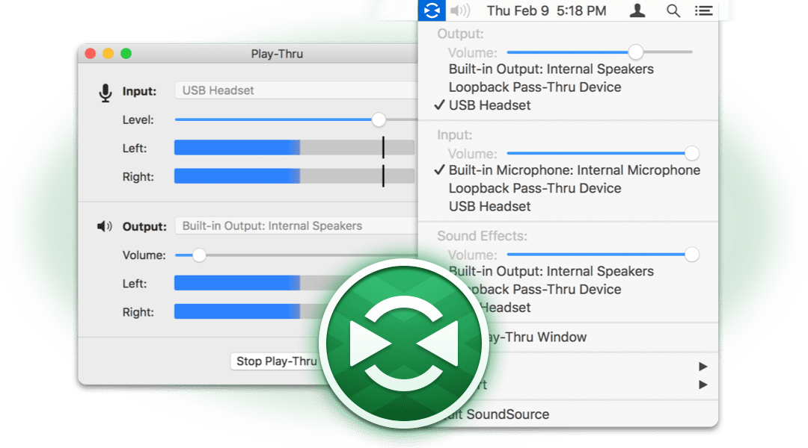

SoundSource: A Superior Sound Control
SoundSource is a handy tool for MacOS designed to give you fast access to all your critical audio settings. From SoundSource's menu bar icon, you can adjust your Input, Output and Sound Effects devices and volume settings in mere moments. SoundSource's Play-Thru window also enables the soft play-thru of audio from input devices, enabling you to hear audio coming in through a microphone or any other audio device.
Getting Started
We recommend a quick read-through of this document, but you can also just dive in if you like. You can refer back here for assistance at any time via the Help menu.
Updated in SoundSource 3.0.2
Critical Bug Fix: We've corrected an issue where the global menu could draw incorrectly on machines with no input devices.
Enhancement: The latency of audio coming in via Play-Thru has been greatly reduced.
New in SoundSource 3.0
Major Enhancement: SoundSource is back (read about SoundSource's history) and better than ever! SoundSource 3 now includes all the audio device switching functionality of the old SoundSource, as well as the audio play-thru functionality from our previous LineIn application.
Enhancement: SoundSource will run in the Dock and the menu bar by default. Switch to menu bar only mode right from the Preferences window.
Enhancement: Make sure SoundSource is always available with the “Start SoundSource at login ” preference.
Other: SoundSource now requires Mac OS X 10.10 (Yosemite)
System Requirements
A Macintosh computer
Mac OS X 10.10 or higher
Installation and Removal
To install SoundSource, just drag it from your download folder to the Applications folder.
If you wish to remove SoundSource, simply drag it to the Trash.
Purchasing
We provide a free trial of SoundSource for you to test. Before purchase, SoundSource's features will disable 10 minutes after the app is launched. The full version of SoundSource can be unlocked with a license key from our online store.
When you're ready, head over to https://rogueamoeba.com/store/ to purchase SoundSource.
For more information, see the Purchasing page.